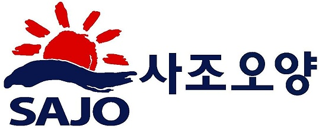
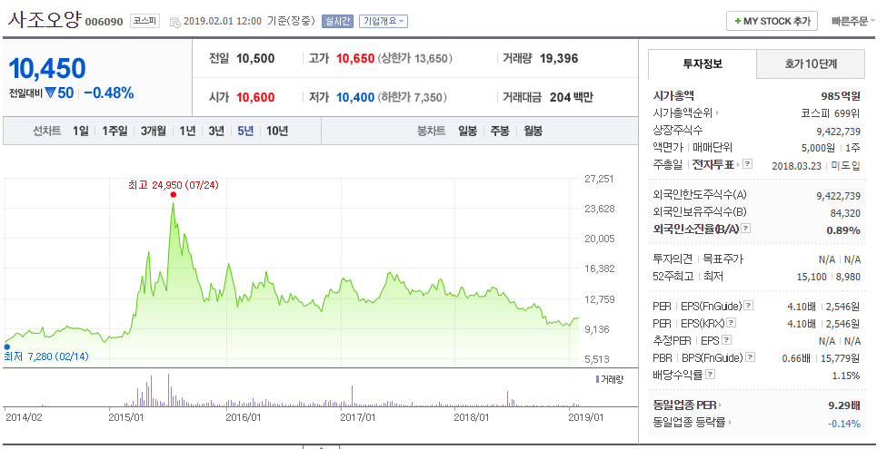
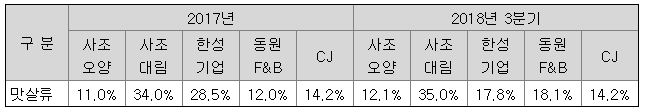
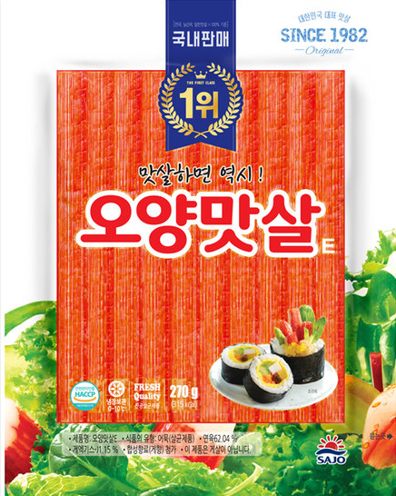
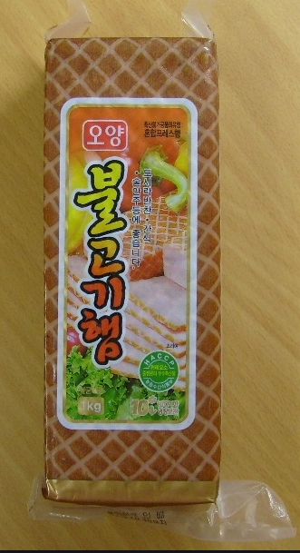
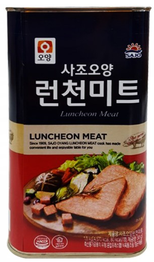
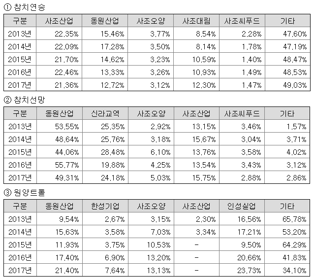
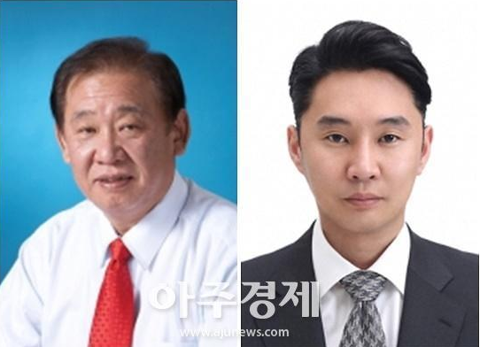
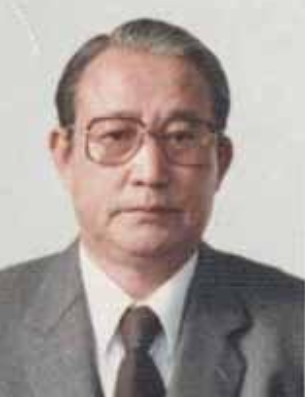
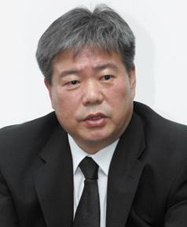

사조오양 (이하 "동사") 은 수산업 및 식품가공업체인데, 오양 하면 '오양맛살' 이 떠오르듯이 원래 오양수산의 맛살로 유명한 회사다. 사조산업은 이외에도 식용유로 유명한 해표도 먹었고 (사조해표), 어묵으로 유명한 대림 (사조대림) 등등 여기저기 M&A 를 한두개 한 것이 아니다. 나름 계열사가 30개가 넘는 대기업인데 시총은 5조가 넘지 않는다. 5조가 안되기 때문에 여러가지 편법도 많이 쓴다. 대표적으로 일감몰아주기 등의 내부거래인데, 현 주진우 회장 (악마기자가 아니다. 이름만 같고 성향은 정반대) 의 장남인 주지홍씨가 주요주주인 사조시스템즈 (SI 업체임) 에 일감몰아주기 등을 통해 편법 상속이 대표적이다.
뭐 편법이라고 불법은 아니니까. 하지만 불법이 아니라고 말이 되는 짓거리는 아니다. 상식적으로 불공정거래인데 눈가리고 아웅하는게지. 우리나라는 저런거 투성이다. 돈많고 권력있으면 다 봐준다. 쌍팔년도도 아닌데 여전하다. 게다가 신세대랍시고 나타난 우리의 밀레니얼들은 더 꼰대같다. 솔직히 한국에 미래 없다고 본다. 편법없으면 못살던 기성세대가 다 늙어 죽어가는데, 새로이 나타난 밀레니얼들이 아빠랑 똑같애. 근데 생각은 더 없어. 한국 경제? 좀 비관적이다. 이건 주관적인 생각이고 암튼.
오양수산은 원래 김성수회장이 창업해서 장남 김명환씨에게 물려주려고 작업했었는데, 김명환 이아저씨가 꼴통이다. 가족하고 원수지간인데다가, 나중에는 아버지한테도 버림받는다. 그래도 본인이 소액주주들 모아서 경영권을 찬탈했는데, 가족들이 열받아서 장남 몰래 보유주식들을 전부 사조산업에 매각한다. 그래서 주진우회장은 땡큐~ 하고 받아먹었다는 이야기.
그렇다고 주진우회장이 경영을 못하느냐 하면 그건 아니다. 막장기업이었던 오양수산을 돈잘버는 회사로 바꿨고, 나머지 인수한 회사들도 대개 경영실적이 굉장히 좋아졌다. 재무구조들도 좋고. 문제는 대주주 지분이 너무 높은데다가 이 사조산업이라는데가 무지하게 불투명한 회사다. 30개 넘는 계열사가 순환출자 구조로 묶여서 아주. 덕분에 실적대비 주가는 매우 낮은 편이지만, 그렇다고 주가가 쉽게 오를 수도 없다. 대주주 지분이 너무 높고, 배당률이 형편없으며, 의사결정구조가 불투명하기 때문이다. 한마디로 투자자에 관심이 없다. 심지어 국민연금도 주주인데 배당을 눈꼽만큼도 안올린다. 국민연금 스튜어드쉽 도입한다 해도, 이 주진우회장이라는 사람이 한나라당 국회의원 출신이다. 요리조리 잘 빠져나갈 가능성이 크다.
사업분야는 크게 두 부문으로 나뉘는데 수산부문과 식품제조부문이다. 비율상으로는 식품제조 (맛살 , 햄 등) 가 76.28%, 수산부문이 22.7% 인데 수산부문이 점점 줄어들고 있다. 수산부문의 주 상품은 참치,명태 등의 원양수산물이다.

맛살류가 대표제품이니 점유율을 보면, 꼴찌다. 근데 같은계열인 사조대림이 1등이다. 점유율의 양단을 막고 있다. 너희들은 포위됐다! 그렇다 회장님은 전략의 귀재인것이다. 꼴찌로부터 추격하고 일등으로서 찍어누르고, 나머지 회사들은 마치 한국이 중국과 일본사이에 낀 샌드위치마냥 눌리고 있는 것 같은 형국인 것이다. 진퇴양난!

대표상품은 오양맛살인데, 국내판매 1위란다. 근데 왜 점유율은 저모냥인가. 맛살이라는 것은 원래 게맛살이라고 명태나 대구등 어육에 전분넣고 어묵으로 만든뒤에 게엑기스나 향을 넣어 만든 것이다. 게맛살 (게 맛 나는 살) 이지 게살이 아니다. 그랬다면 ''맛게살''이라고 했겠지. 게살은 한두푼하는게 아니다. 암튼 1970년에 일본에서 개발되어 우리나라에 오양수산이 1982년에 처음 개발에 성공했다만. 특허신청을 안해서 여기저기서 막 찍어냈다고 한다. 그래서 이놈저놈 다 만드는것. 여튼 국내판매 1위라는데, 다른회사들은 수출을 하기 때문에 국내1위가 아닌가보다. 여튼 국내판매 1위의 근거가 좀. 1982년부터 치면 1누적1위일거같긴 한데. 이건 좀 퀘스천마크다.
그래서 찾아보았다. 일반맛살 기준이란다. 일반맛살은 대체 뭔지 원. 여튼 그러려니하고 넘어가도록 하자.
최근에 맛살로 유명한 회사는 한성기업이고, 한성기업의 '크래미' 가 짱먹는다. 맛있다 크래미. 그냥 한성기업을 분석하는게 나을 것 같다. 여튼 크래미는 위의 맛살보다 한 5배 비싼데도 잘팔린다. 크래미에 대적해서 사조대림에서 나온 게 크라비아.
그 외에 최근에 사조남부햄과 합병을 통해 돈육가공을 한다. 쏘세지 만든다는 이야기.

뭐 이런 옜날에 자주먹던 스모크햄이나, 스팸류. 그외에도 여러가지 있지만 암튼. 돈육가공업체로, 매출의 상당부분이 돈육가공에서 나온다. 그래서 돼지값이 떨어져야만 한다. 구제역이 오면 망하는걸까? 전혀 상관없다. 국내산 돼지 써서 햄 만드는 거 봤나. 오히려 돼지값올랐다고 제품값 올릴 거다. 구제역은 플러스라는 이야기. 물론 축산농가에는 위로의 말씀을 드린다. 여튼 육가공이 식품제조부문의 약 30%~35% 정도 차지하는 것 같다. 일등은 당연히 맛살.
동사 공장 가동률은 평균 94% 정도 된다. 근데 이게 뭔 기준으로 가동률인가? 하루 8시간근무기준인가? 근거가 없다.

오히려 맛살보다 이쪽이 낫다. 1번 참치연승은 그냥 참치를 낚시로 잡는건데 뭐 낚싯줄을 길게 무지많이 내려서 잡는 것이다. 횟감용 참치는 무조건 낚시로 잡는다. 선망이라는 건 그물로 끌어서 잡는건데, 참치를 그물로 잡으면 뭐 많이 상하고 스트레스도 많이 받고 해서 횟감용으로는 못쓰고 거의 참치캔 등의 가공용이다. 원양트롤은 그냥 명태잡이다. 사조오양은 아무데서도 1등하는 것이 없다. 거의 꼴찌랄까. 그래도 계열사가 다 먹고 있다. 뭔놈의 업계가 다 사조사조사조사조. 밥사조!
여튼 횟감은 국내 및 일본에 팔고, 가공용은 환경규제나 제한된 쿼터 내 경쟁선박들이 많아서 점점 수익성이 떨어지고, 명태 트롤은 러시아와 관계가 중요하고. 뭐 그렇다. 그리고 사실 수산부문은 수익에는 어가 (고기가격) , 비용에는 유가 (기름값) 가 가장 중요하다. 최근에 전반적인 어가가 좀 떨어지고 있고 유가도 떨어져 있는 상태라 그냥 퉁 치면 되겠다.
저기서 보면 알것지만, 같은 지배자 아래 무려 4개의 계열사가 같은 일을 하고 있다. 같은 시설과 인력으로 같은 상품을 찍어내고 있다는 이야기. 약간 으쓸해지지 않나. 약간 허튼마음만 먹으면 매출조작이나 비용전가가 무지막지하게 쉬운 구조라고 본다. 뭐 고기 한마리 잡을때마다 전산망에 실시간으로 올려서 감사받는거 아니잖나. 게다가 사조그룹은 이사회가 그냥 일가친척외에 없다. 견제나 감시같은게 아예 없는 회사라는 이야기. 이부분이 찜찜하다. 증거는 없다. 그냥 찜찜하다. 뭐 회장님이 알아서 잘 하시겠지.
사조대림이 최대주주 (60.53%)인데 어차피 사조대림은 사조산업이 지배하고, 사조산업은 다시 사조시스템즈가 지배하므로 어차피 최종보스는 사조시스템즈 주지홍씨다. 주지홍씨는 동사의 지분을 아버지보다 많이 가지고 있다 (5.14%). 별의별 순환출자가 아주 크고 아름답게 되어있다.

*출처 : 아주경제 (어차피 워터마크에 다 있다)
왼쪽이 주진우회장 (1949년생), 오른쪽이 아드님이시다.(주지홍 상무, 1977년생). 두분 다 좀 독해보인다. 말조심해야겠다. 여튼간에, 이분들도 나름 갑질을 조용조용히 하시는 분들인지 이런 기사가 있다. https://www.ajunews.com/view/20180902135855551 , "[단독]사조그룹, 직원에 수백억 선물세트 강매···주진우 회장 “나가면 갈 데 있냐” - 아주경제. 2018.9.2
"뭐 우리나라 회사들에는 일반적인 전 사원의 영업사원화! 은행원들이여 나가서 카드를 팔고와라! 사조인들이여 나가서 선물세트를 팔고와라! 라는 기사인데 이 신문사의 특성상 아마 사조그룹에서 촌지를 안줘서 저런거 쓴 거 같기는 하다.
암튼 저 아주경제는 독특한게, 저 기사를 2018년에 썼는데, 2016년에는 이런 기사가 있다. http://www.mediatoday.co.kr/?mod=news&act=articleView&idxno=129719 " 아주경제 임금볼모 판촉 캠페인에 기자들 부글부글 " - 미디어오늘 2016.4.28
지들끼리 지랄을 한다. 똥묻은게 겨 묻은게 욕하고. 좋네 깨끗한 개들 입 더럽게 안하도록 지들끼리 저주의굿판을 벌여주니. 회장님은 선원같은 외모와는 달리, 경기고에 서울대 정치학, 게다가 미국 컬럼비아 대학교 정치학 석사, 컬럼비아 정치학 박사는 논문 못쓰고 수료. 이런 초특급 엘리트시다. 국회의원까지 하신 대단하신분인데, "나가면 갈 데 있냐" 라고 하시니 참. 이래서 대통령은 명문대출신 뽑으면 안된다. 똑똑한데 다들 인성이 엉망이시니, 국민들을 아주 똑똑하고 교활하게 괴롭히신다니깐. 돌이켜 생각해보니 대통령은 고졸들이 제일 잘 한것같다.
사조산업이 오양수산을 인수한 데에는 사연이 있는데, 쓰기로는 사연이라 쓰고 읽기는 "개막장" 이라고 읽는다. 오양수산은 1969년에 죽은 김성수씨에 의해 창업되었고, 2007년에 사조산업에 합병되었다. 김성수씨는 아들이 둘 있는데 장남이 김명환씨고 차남이 김철환씨다. 딸들도 있는데 뭐 그냥 딸들은 신경안쓰던 시대라. 암튼 김성수 회장은 장남에게 물려주려고 일찍부터 회사생활을 시켰는데, 하라는 경영은 안하고 뭐 좀 딴짓을 많이 했나보다. 그래서 둘이 사이가 안좋아져서 장남을 내치려니까, 어이쿠 김명환대표가 소액주주모아서 쿠데타에 성공! 사장이 되었다. 그래서뭐 가족하고 완전 척을지게 되는데, 가족들이 와신상담하는 중에 김성수회장이 쓰러진다. 뭐 식물인간이 되었는데, 보통 이럴때는 어머니가 법정대리인이 된다. 아이코! 큰일났네, 그리고 어머니와 다른 가족들이 합심하여 자기들 지분을 사조산업에 전량 매각해버린다. 게임 끝.
김명환씨는 바로 이사회에서 이사해임되고, 여러 소송을 하였으나 뭐 잘 될턱이 없고, 2012년~2013년경즘에 장내에서 본인 보유지분을 매각했다. 매각 가격자체는 나쁘지 않았다. 그런데 뭐 경영권 있었으면 훨씬 더 비싸게 팔았을텐데. 가족하고 잘 지내는게 중요한 것 같다. 뭐 소송걸고, 아버지 장례식장에 사람들 못들어오게 막고 난리친 장남이 되어버렸다. 돈때문에. 어차피 경영권없어도 물려받은 재산도 많은데. 인간의 욕심이란 끝이 없다.
이후에도 김성수회장이 차명으로 김명환씨 이름으로 남겨둔 1000억대의 토지가 알려지면서, 또한번 소송. 뭐 그냥 인생의 후반은 소송만하다 끝나는 소송가족사. 돈은 너무 많거나 적으면 재해다. 그런데 우리사회에는 돈이 너무 많거나, 너무 없는 사람들만 잔뜩인거 같다.
여튼 막장 오양수산은 이후에 사조산업에 편입되면서 돈도 잘 벌고 뭐 무난하게 경영이 잘 되어왔다. 다만 10년이 넘는 그 시간에 주가도 별로 안바뀌었지만. 이 회사 PSR 이 0.1 이고 PB 가 0.66 정도다. 재무재표상으로는 거의 완벽한 회사다. 근데 그 재무재표가 다른 계열사와 계속 교환될 가능성이 있기 때문에 저평가인것이다. 그러니까 저평가는 아니다. 대주주가 주가 올리고 싶을 땐 올릴 수 있을거다 아마. 이 회사의 주가가 오르려면 무조건 대주주가 움직여야 한다. 이런 회사에 작전하다가는 골로가는 수가 있다.

왼쪽이 고 김성수회장, 오른쪽이 아드님이시다. 김명환 전 대표. 살아생전 맛살도 국내최초로 개발하고 날리던 분이 아드님 욕심덕에 장례식도 제대로 못치르고 갔다. 죽은다음에 알게 뭐냐만. 그래도 굳이 왜그랬을까 저 오른쪽 분께서는?
여튼 그러나저러나 수산업 일등은 이분이다. 약간 전전대통령 닮기도 하긴 했는데. 알게모르게 장사의 신이다 저아저씨. 동원그룹 김재철회장. 이건 그냥 여담이다.
여튼 기업지배주주들의 도덕성이나 신뢰성은 10점만점에 6점정도 될 것 같고, 경영수완은 10점만점에 8점정도로 좋다. 하지만 그냥 짧은 경험상 느낀 것이지만, 투자자의 입장에서 경영진의 능력공식은 다음과 같다.
경영진의 능력 = 경영수완 x (도덕성 - 5) x 2
계산하면 100점만점에 16점정도 되겠다. 능력치가 -100점에서 100점까지 범위니까, 평균이상은 한다고 보자. 긍정적으로다가. 뭐 우리나라에 0점넘는 재벌들이 얼마나 되겠어. 혹시 밤에 칼맞을까봐 적는다.
2018예상순익은 210억정도, 동사 시가총액은 980억수준이고, GP/A 는 14%정도이다. 2018 예상 PE 는 그러면 4~4.5 정도로 생각되는데 밸류에이션이 상당히 좋아보이지만, 어디까지나 그돈이 투자자에게 돌아올 때에만 좋은 것이다. 배당성향이 지나치게 낮아서 투자자알기를 호구로 아는 수준이다. 뭐 굳이 투자자를 모셔야할 필요는 없는 상태긴 하다. 당장 상장폐지하는 걸 원할지도 모른다. 굳이 상장의 이점이 없다. 돈도 많고. M&A 에 필요하니까 남겨두는 것인데 말이지. 뭐 근거는 없다.
현금흐름도 좋고, 재무상태고 괜찮다. PB 는 0.6 수준이고, ROA 도 7%수준으로 양호하다. 부채비율도 94%고, 유동부채비율은 75%수준. 배당수익률은 1.14% 수준이다.
전체적으로 원자재값 (돈육,어육,유가) 이 안정적 또는 하락세라서 비용측면에서 동사에 메리트가 있기는하다. 하지만 어가가 떨어지면 (특히 참치값은 하락세가 2018년부터 시작되었다) 수산부문에서 수익성이 악화될 수는 있다. 그래서 현재 상황에서 가장 큰 리스크는 유가 상승이다. 그러나 중국이 하강국면이라 원자재 수요가 꽤 줄어들 가능성이 있으므로, 당분간 유가의 급등 가능성은 낮은 것으로 보인다. 근데 뭐 누가 알겠나. 사우디에서 전쟁이날지.
재무적으로 문제 없고, 사업 리스크도 제한적이다. 현상태 유지하고 10년 버티면, 주가는 최소 6만원 간다만, 그냥 희망사항일 뿐이다.
사조그룹 내 중복되는 사업들이 많아서 결국에는 사조대림, 사조씨푸드, 사조오양, 사조산업은 계속 서로 합병 또는 분할을 지속해야 될 것 같다. 앞으로도 계속 이렇게 하면 분명히 계열 구조를 악용할 가능성이 크기 때문이다. 가뜩이나 이상한 구조인데 말이지.
여튼 동사는 장사는 잘 하고 있는데, 좀 불확실해 보인다. 투자해서 돈을 잃지도 않겠지만 크게 벌지도 못하는데, 중간중간 예측불가능한 오너리스크가 있다. 오너가 똑똑해서 천하의 삽질을 하지는 않겠지만, 후계자에 대해서는 아는 바가 없으니 여전히 불확실하다.
본 문서는 개인적인 판단과 분석을 수행한 문서로, 매수매도 등의 투자의견과는 전혀 상관없음을 알려드린다. 투자결정은 각 개별 투자자가 해야하며, 그에 따른 이익이나 손실 또한 각 투자자에게 귀속된다. 또한 본 문서의 내용중 사실과 다른점이 있을 경우에는 알려주길 바라며, 이는 객관적 사실에 한한다. 미래 계획이나 전망등이 다르다고 해서 요청되는 수정사항은 무시됨을 알려드린다.